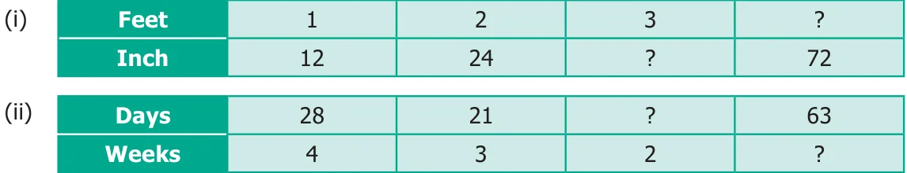

Exercise 3.2
- Fill in the blanks for the given equivalent ratios.
(i) \(3 : 5 = 9 : \underline{\qquad}\) (ii) \(4 : 5 = \underline{\qquad} : 10\) (iii) \(6 : \underline{\qquad} = 1 : 2\) - Complete the table.

- Say True or False.
- \(5 : 7\) is equivalent to \(21 : 15\)
- If 40 is divided in the ratio \(3 : 2\), then the larger part is 24.
- Give two equivalent ratios for each of the following.
(i) \(3 : 2\) (ii) \(1 : 6\) (iii) \(5 : 4\) - Which of the two ratios is larger?
(i) \(4 : 5\) or \(8 : 15\) (ii) \(3 : 4\) or \(7 : 8\) (iii) \(1 : 2\) or \(2 : 1\) - Divide the numbers given below in the required ratio.
(i) 20 in the ratio \(3 : 2\) (ii) 27 in the ratio \(4 : 5\) (iii) 40 in the ratio \(6 : 14\) - In a family, the amount spent in a month for buying Provisions and Vegetables are in the ratio \(3 : 2\). If the allotted amount is ₹4000, then what will be the amount spent for (i) Provisions and (ii) Vegetables?
- A line segment 63 cm long is to be divided into two parts in the ratio \(3 : 4\). Find the length of each part.
Objective Type Questions
- If \(2 : 3\) and \(4 : \underline{\qquad}\) are equivalent ratios, then the missing term is
(a) 6 (b) 2 (c) 4 (d) 3 - An equivalent ratio of \(4 : 7\) is
(a) \(1 : 3\) (b) \(8 : 15\) (c) \(14 : 8\) (d) \(12 : 21\) - Which is not an equivalent ratio of \(\frac{16}{24}\) ?
(a) \(\frac{6}{9}\) (b) \(\frac{12}{18}\) (c) \(\frac{10}{15}\) (d) \(\frac{20}{28}\) - If ₹1600 is divided among A and B in the ratio \(3 : 5\) then, B's share is
(a) ₹480 (b) ₹800 (c) ₹1000 (d) ₹200